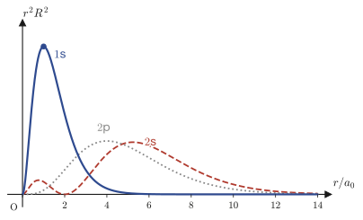
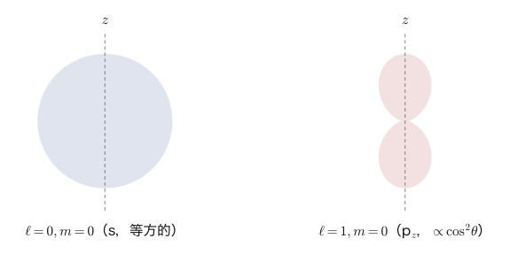

第48章水素原子のシュレーディンガー方程式（球座標）
第45章では箱の中の電子（直交座標），第46章では調和振動子，第47章では円柱座標・極座標の問題を扱い，そのたびに「変数分離法で常微分方程式に分解する→フロベニウスの級数解法を使う→境界条件（またはr→∞で発散しないという条件）から量子数が現れる→エネルギーが量子化される」という同じ「型」を繰り返し確認してきた．本章では，この型を集大成として，量子力学でもっとも有名な問題——水素原子（hydrogen atom）——に適用する．電子1個が陽子1個のまわりを運動する，もっとも単純な原子である．
水素原子が特別なのは，ポテンシャルが球対称なクーロン引力 $V(r)=-\dfrac{1}{4\pi\varepsilon_0}\dfrac{e_0^2}{r}$ で与えられ，しかもシュレーディンガー方程式が球座標で完全に変数分離できて，厳密に解けてしまう点である．解いた結果は，高校化学・高校物理で丸暗記した「電子殻」「1s軌道，2s軌道，2p軌道…」「主量子数 $n$」がどこから出てくるのかを，完全な数式で説明してくれる．最終的に得られるエネルギー準位の公式 $E_n=-\dfrac{m_ee_0^4}{8\varepsilon_0^2h^2}\cdot\dfrac1{n^2}$ は，ボーア（Bohr）が1913年に前期量子論（電子は特定の円軌道しか取れない，という天下り的な仮定）から導いた式と完全に一致する——ただし今度は，天下り的な仮定は一切使わず，シュレーディンガー方程式という1本の偏微分方程式と，「波動関数は無限遠で発散してはいけない」という自然な要求だけから導かれる．
途中には，本書でこれまでに登場した道具がほぼすべて動員される——フロベニウスの級数解法（第39章），ルジャンドルの微分方程式（第40章），ベッセル関数とラゲールの多項式（第41章），球座標のラプラシアン（第44章），シュレーディンガー方程式そのものの立て方（第45章），フロベニウス解法によるエネルギー量子化という「型」（第46章）．本章はいわば，これまでの技術の「卒業制作」である．少し長い章になるが，一歩ずつ，行間を飛ばさずに読み進めてほしい．
- 球座標のシュレーディンガー方程式を $\psi=R(r)\Theta(\theta)\bar\Phi(\varphi)$ と変数分離し，分離定数を $\ell(\ell+1)$，$m^2$ とおいて動径・天頂角・方位角の3本の常微分方程式に分解する（練習例として無限球型ポテンシャルを解く）
- 動径方程式にフロベニウスの級数解法を適用し，決定方程式から $\lambda=\ell$（原点で有限）を選ぶこと，級数を半奇数次のベッセル関数 $J_{\ell+1/2}$ として同定すること
- 水素原子のクーロンポテンシャルのもとで同じ変数分離を行い，$R(r)=S(r)/r$ とおく置換で動径方程式を扱いやすい形に変形する
- $r\to\infty$ での漸近形 $S\sim e^{-Kr}$ を見抜いて $S=X(r)e^{-Kr}$ とおき，フロベニウスの級数解法で決定方程式 $\lambda=\ell+1$（原点で有限）を導く
- 級数が無限に続くと波動関数が発散してしまうことから，級数が有限項で止まる（多項式になる）条件として主量子数 $n$ が現れ，方位量子数 $\ell$ に対する制約 $\ell\le n-1$ が導かれること
- ラゲールの陪多項式（associated Laguerre polynomial）による動径波動関数の表示と，水素原子のエネルギー準位 $E_n=-\dfrac{m_ee_0^4}{8\varepsilon_0^2h^2n^2}=-\dfrac{13.6\,\text{eV}}{n^2}$（ボーアの公式と一致）の導出
- 天頂角方向の方程式を $x=\cos\theta$ の置き換えでルジャンドルの陪微分方程式に変形し，ルジャンドルの陪関数（associated Legendre function）による解を求める
- 主量子数 $n$・方位量子数 $\ell$・磁気量子数 $m$ の3つの量子数がとる値の範囲（$\ell\le n-1$，$-\ell\le m\le\ell$）と，1s，2s，2p軌道などの対応，エネルギー準位の縮退度 $n^2$
もとにしたノート：望月泰英『数学ノート 偏微分方程式』 pp. 52–60．
48.1 球座標のシュレーディンガー方程式と変数分離——無限球型ポテンシャルの例
まず，本章全体で使う道具を1つ準備する．電子の位置を球座標 $(r,\theta,\varphi)$（$r\ge0$：原点からの距離，$\theta\in[0,\pi]$：天頂角，$\varphi\in[0,2\pi)$：方位角）で表すとき，ラプラシアン $\nabla^2$ は次の形になる（第44章で導いた結果の再掲である）．
\begin{equation} \nabla^2=\frac{1}{r^2}\pdiff{}{r}\!\left(r^2\pdiff{}{r}\right)+\frac{1}{r^2\sin\theta}\pdiff{}{\theta}\!\left(\sin\theta\pdiff{}{\theta}\right)+\frac{1}{r^2\sin^2\theta}\pdiff{^2}{\varphi^2} \label{eq:48-laplacian} \end{equation}この章で解きたいのは，時間に依存しないシュレーディンガー方程式（第45.2節で導いた式の3次元版）
\begin{equation} -\frac{\hbar^2}{2m_e}\nabla^2\psi+V\psi=E\psi \label{eq:48-tise-general} \end{equation}であり，ポテンシャル $V$ が原点からの距離 $r$ だけで決まる（角度 $\theta,\varphi$ によらない）場合——これを中心力ポテンシャル（central potential）という——である．中心力ポテンシャルであれば，$V$ の具体的な形によらず，変数分離法の手順の後半（天頂角・方位角の部分）はまったく同じになる．このことを実感するために，本節ではまず，水素原子より単純な例——半径 $a$ の球の中に電子を閉じ込める無限球型ポテンシャル（infinite spherical well）——を解いてみよう．次節から扱う水素原子のクーロンポテンシャルとの違いは，動径方向の方程式だけに現れることが確認できるはずである．
定義48.1 無限球型ポテンシャル
$$ V(r)=\begin{cases}0 & (0\le r\le a)\\ \infty & (r\gt a)\end{cases} $$すなわち，原点を中心とする半径 $a$ の球の内側ではポテンシャルエネルギーが $0$（自由な電子と同じ），外側では無限大というポテンシャルである．第45章の無限井戸型ポテンシャル（1次元の壁）を，3次元の球に置き換えたものだと考えればよい．境界条件は，井戸の外側で $\psi\equiv0$（第45章と同じ理由——無限大のポテンシャルの中には粒子が存在できない）であることから，球面上で波動関数が $0$ になるという条件
$$ \psi(a,\theta,\varphi)=0 $$で表される．また，$\theta,\varphi$ は角度なので，$\varphi$ について1周すれば元に戻るという周期性の条件 $\psi(r,\theta,0)=\psi(r,\theta,2\pi)$ も課しておく．
球の内側（$0\le r\le a$，$V=0$）では，式 \eqref{eq:48-tise-general} は
\begin{equation} \frac{1}{r^2}\pdiff{}{r}\!\left(r^2\pdiff{\psi}{r}\right)+\frac{1}{r^2\sin\theta}\pdiff{}{\theta}\!\left(\sin\theta\pdiff{\psi}{\theta}\right)+\frac{1}{r^2\sin^2\theta}\pdiff{^2\psi}{\varphi^2}+\frac{2m_e}{\hbar^2}E\psi=0 \label{eq:48-well-pde} \end{equation}となる．ここで変数分離法（method of separation of variables）——第43章で波動方程式・熱伝導方程式に，第45章でシュレーディンガー方程式そのものに使った，「多変数の関数を，1変数だけの関数の積で近似的にではなく厳密に表せると仮定してみる」という方針——を今一度使う．$\psi(r,\theta,\varphi)=R(r)\Theta(\theta)\bar\Phi(\varphi)$ とおく（$\bar\Phi$ の上の横棒は，のちに登場する規格化定数と紛れないようにするための，ノートの表記に合わせた記号である）．
導出：3本の常微分方程式への分解
$\psi=R\Theta\bar\Phi$ を式 \eqref{eq:48-well-pde} に代入すると，$r$ だけを含む微分は $R$ に，$\theta$ だけを含む微分は $\Theta$ に，$\varphi$ だけを含む微分は $\bar\Phi$ に，それぞれ作用する（積の中で自分以外の因子は定数として外に出せる）．
$$ \frac{\Theta\bar\Phi}{r^2}\diff{}{r}\!\left(r^2\diff{R}{r}\right)+\frac{R\bar\Phi}{r^2\sin\theta}\diff{}{\theta}\!\left(\sin\theta\diff{\Theta}{\theta}\right)+\frac{R\Theta}{r^2\sin^2\theta}\diff{^2\bar\Phi}{\varphi^2}+\frac{2m_e}{\hbar^2}ER\Theta\bar\Phi=0 $$両辺を $R\Theta\bar\Phi$（$\neq0$ と仮定してよい）で割り，さらに全体に $r^2$ を掛けると，
$$ \frac{1}{R}\diff{}{r}\!\left(r^2\diff{R}{r}\right)+\frac{1}{\Theta\sin\theta}\diff{}{\theta}\!\left(\sin\theta\diff{\Theta}{\theta}\right)+\frac{1}{\bar\Phi\sin^2\theta}\diff{^2\bar\Phi}{\varphi^2}+\frac{2m_e}{\hbar^2}Er^2=0 $$となる．第1項と第4項の一部（$\dfrac{2m_e}{\hbar^2}Er^2$）は $r$ だけの式，第2項は $\theta$ だけの式，第3項は $\varphi$ だけの式である．そこで，$r$ に関係する部分をまとめて左辺に，$\theta,\varphi$ に関係する部分を右辺に移すと，
$$ \frac{1}{R}\diff{}{r}\!\left(r^2\diff{R}{r}\right)+\frac{2m_e}{\hbar^2}Er^2=-\frac{1}{\Theta\sin\theta}\diff{}{\theta}\!\left(\sin\theta\diff{\Theta}{\theta}\right)-\frac{1}{\bar\Phi\sin^2\theta}\diff{^2\bar\Phi}{\varphi^2} $$となり，左辺は $r$ のみの関数，右辺は $\theta,\varphi$ のみの関数である．両辺の変数が完全に独立なのに等しいのだから，両辺は $r,\theta,\varphi$ のどれにもよらない同じ定数でなければならない．この定数を，あとで見る理由により $\ell(\ell+1)$ とおく．
数学ノート：なぜ分離定数を $\ell(\ell+1)$ とおくのか
分離定数を単に $\mu$ などと素朴においてもよいのだが，あとで天頂角方向の方程式を解くと（48.4節），解が存在するための条件が「$\mu=\ell(\ell+1)$（$\ell=0,1,2,\dots$）の形の数である」という形で出てくることが分かる．つまり，どうせ最後には $\ell(\ell+1)$ の形になる数しか許されないので，最初からその形で定数をおいてしまえば，のちの式がきれいになる（第40章のルジャンドルの方程式でも，まったく同じ理由で分離定数を $\ell(\ell+1)$ とおいた）．なお $\ell$（小文字のエル）は，後で方位量子数（azimuthal quantum number）と呼ばれる非負整数になる．
右辺の式について，さらに $\Theta,\bar\Phi$ を分離する．右辺の等式（$-\dfrac1{\Theta\sin\theta}\diff{}{\theta}\!\left(\sin\theta\diff\Theta\theta\right)-\dfrac1{\bar\Phi\sin^2\theta}\diff{^2\bar\Phi}{\varphi^2}=\ell(\ell+1)$）の両辺に $\sin^2\theta$ を掛けて整理すると，
$$ \frac{\sin\theta}{\Theta}\diff{}{\theta}\!\left(\sin\theta\diff\Theta\theta\right)+\ell(\ell+1)\sin^2\theta=-\frac{1}{\bar\Phi}\diff{^2\bar\Phi}{\varphi^2} $$となり，今度は左辺が $\theta$ だけ，右辺が $\varphi$ だけの式になる．同じ論法で，これも定数でなければならない．この定数を $m^2$ とおく（$m$ は後で磁気量子数（magnetic quantum number）と呼ばれる整数になる．$m^2\ (\ge0)$ とおくのは，方位角方向の方程式 $\bar\Phi''+m^2\bar\Phi=0$ の一般解が振動解 $e^{\pm im\varphi}$ になってほしい——後述のとおり周期境界条件を課すため——という見込みによる）．左辺の $\dfrac{\sin\theta}{\Theta}\diff{}{\theta}\!\left(\sin\theta\diff\Theta\theta\right)$ を積の微分公式で展開すると $\sin^2\theta\diff{^2\Theta}{\theta^2}+\sin\theta\cos\theta\diff\Theta\theta$（$\theta$ の1階微分の項に注意）となるので，以上をまとめると，次の3本の常微分方程式が得られる．
\begin{equation} r^2\diff{^2R}{r^2}+2r\diff Rr+\left(\varepsilon r^2-\ell(\ell+1)\right)R=0\qquad\left(\varepsilon:=\frac{2m_eE}{\hbar^2}\right) \label{eq:48-well-radial} \end{equation} \begin{equation} \sin^2\theta\diff{^2\Theta}{\theta^2}+\sin\theta\cos\theta\diff\Theta\theta+\left(\ell(\ell+1)\sin^2\theta-m^2\right)\Theta=0 \label{eq:48-theta-eq} \end{equation} \begin{equation} \diff{^2\bar\Phi}{\varphi^2}+m^2\bar\Phi=0 \label{eq:48-phi-eq} \end{equation}天頂角方向の式 \eqref{eq:48-theta-eq} と方位角方向の式 \eqref{eq:48-phi-eq} は，ポテンシャル $V(r)$ の中身をまったく使っていないことに注目してほしい——これらは，ポテンシャルが中心力（$r$ だけに依存）でありさえすれば，その関数形によらずいつでも同じ形になる．したがって，この2本の方程式を解く作業は，水素原子の場合とまとめて48.4節で行うことにし，本節では無限球型ポテンシャルに固有の部分，すなわち動径方程式 \eqref{eq:48-well-radial} だけを解く．
導出：動径方程式のフロベニウス級数解
式 \eqref{eq:48-well-radial} は $r=0$ に確定特異点を持つ（第39章のフロベニウスの理論）ので，$R(r)=\displaystyle\sum_{k=0}^{\infty}a_kr^{k+\lambda}$（$a_0\neq0$）の形の級数解を仮定する．代入すると，
$$ r^2\sum_{k=0}^{\infty}(k+\lambda)(k+\lambda-1)a_kr^{k+\lambda-2}+2r\sum_{k=0}^{\infty}(k+\lambda)a_kr^{k+\lambda-1}+\left(\varepsilon r^2-\ell(\ell+1)\right)\sum_{k=0}^{\infty}a_kr^{k+\lambda}=0 $$となる．第1項・第2項は指数を $r^{k+\lambda}$ にそろえると次数が2下がり，第3項の $\varepsilon r^2(\cdots)$ は次数が2上がる．最低次の項（$k=0$ と $k=1$，$\varepsilon$ を含まない部分）と，それ以降の項（$\varepsilon$ を含む，2つずれた項どうしの組）とに分けて整理すると，
$$ \{\lambda(\lambda+1)-\ell(\ell+1)\}a_0r^{\lambda}+\{(\lambda+1)(\lambda+2)-\ell(\ell+1)\}a_1r^{\lambda+1} +\sum_{k=0}^{\infty}\Big[\{(k+\lambda+2)(k+\lambda+3)-\ell(\ell+1)\}a_{k+2}+\varepsilon a_k\Big]r^{k+\lambda+2}=0 $$（第1項・第2項は，$r^{k+\lambda-2}(k+\lambda)(k+\lambda+1)-\ell(\ell+1)r^{k+\lambda}$ の形の式を $k=0,1$ について書き下したもの——$k(k-1)+2k=k(k+1)$ に注意——であり，$k\ge2$ の項は $k\to k+2$ と番号を振り直して第3項の和にまとめた．）各べき $r^\lambda,r^{\lambda+1},r^{k+\lambda+2}$ の係数はすべて $0$ でなければならないから，
$$ \begin{cases} \{\lambda(\lambda+1)-\ell(\ell+1)\}a_0=0\\[4pt] \{(\lambda+1)(\lambda+2)-\ell(\ell+1)\}a_1=0\\[4pt] a_{k+2}=-\dfrac{\varepsilon\,a_k}{(k+2)(k+3+2\ell)}\qquad(k=0,1,2,\dots) \end{cases} $$（最後の漸化式は，$(k+\lambda+2)(k+\lambda+3)-\ell(\ell+1)$ に $\lambda=\ell$ を代入し，$(k+\ell+2)(k+\ell+3)-\ell(\ell+1)=(k+2)(k+2\ell+3)+\ell(\ell+1)-\ell(\ell+1)=(k+2)(k+3+2\ell)$ と因数分解した形である——実際に展開して確かめると，$(k+\ell+2)(k+\ell+3)=k^2+k(2\ell+5)+(\ell+2)(\ell+3)$ となり，$\ell(\ell+1)$ を引くと $k^2+k(2\ell+5)+2\ell+6=(k+2)(k+2\ell+3)$ と一致する）．$a_0\neq0$ だから第1式より $\lambda(\lambda+1)=\ell(\ell+1)$，すなわち $\lambda=\ell$ または $\lambda=-(\ell+1)$（2次方程式 $\lambda^2+\lambda-\ell(\ell+1)=0$ を解の公式または因数分解 $(\lambda-\ell)(\lambda+\ell+1)=0$ で解く）．$\lambda=-(\ell+1)$（$\ell\ge0$ だから常に負）を選ぶと，$R(r)\sim a_0r^{\lambda}$（$r\to0$）が原点で発散してしまい，波動関数として不適切である．したがって
$$ \lambda=\ell $$を選ぶ．次に，$a_1=0$ とおく（$\lambda=\ell$ のとき第2式の係数 $(\ell+1)(\ell+2)-\ell(\ell+1)=2(\ell+1)\neq0$ なので，$a_1=0$ が要請される——$a_1\ne0$ にすると係数が $0$ でない式 $=0$ という矛盾になる）．すると漸化式により $a_1=a_3=a_5=\cdots=0$（奇数番目の係数はすべて，直前の奇数番目の係数の定数倍で決まるため）となり，偶数番目だけが残る．$k=0,2,4,\dots$ を順に代入すると，
$$ a_2=-\frac{\varepsilon}{2(3+2\ell)}a_0,\qquad a_4=-\frac{\varepsilon}{4(5+2\ell)}a_2=\frac{\varepsilon^2}{2\cdot4\cdot(3+2\ell)(5+2\ell)}a_0,\qquad a_6=-\frac{\varepsilon}{6(7+2\ell)}a_4=-\frac{\varepsilon^3}{2\cdot4\cdot6\cdot(3+2\ell)(5+2\ell)(7+2\ell)}a_0 $$という規則性が見える．一般に，$n$ 回漸化式を使うと符号が $(-1)^n$，分母に $2\cdot4\cdots(2n)=2^nn!$ と $(3+2\ell)(5+2\ell)\cdots(2n+1+2\ell)$ が現れる．後者の積は，ガンマ関数の性質 $\Gamma(z+1)=z\Gamma(z)$（第32章）を繰り返し使うと $\Gamma\!\left(n+\ell+\tfrac32\right)\big/\Gamma\!\left(\ell+\tfrac32\right)\cdot2^n$（半整数ずつ増えるので $2^n$ で割って辻褄を合わせる）とまとめられ，結局
$$ a_{2n}=\frac{(-1)^n\varepsilon^n}{2^{2n}n!\,\Gamma\!\left(n+\ell+\tfrac32\right)}\cdot\Gamma\!\left(\ell+\tfrac32\right)a_0 $$という形になる（$\Gamma\!\left(\ell+\tfrac32\right)a_0$ をあらためて定数と見て $a_0$ に含めてしまってよい）．したがって
$$ R(r)=a_0\sum_{k=0}^{\infty}\frac{(-1)^k\varepsilon^k}{2^{2k}k!\,\Gamma\!\left(k+\ell+\tfrac32\right)}r^{2k+\ell} $$を得る．最後に，これを標準的なベッセル関数の級数（第41章）
$$ J_\nu(x)=\sum_{k=0}^{\infty}\frac{(-1)^k}{k!\,\Gamma(k+\nu+1)}\left(\frac{x}{2}\right)^{2k+\nu} $$の形に合わせよう．$\nu=\ell+\tfrac12$，$x=\sqrt\varepsilon\,r$ とおくと，$\left(\dfrac{x}{2}\right)^{2k+\nu}=\left(\dfrac{\sqrt\varepsilon}{2}\right)^{2k+\ell+\frac12}r^{2k+\ell+\frac12}$ であり，これは $R(r)$ の一般項 $r^{2k+\ell}$ と比べて $r^{1/2}\left(\sqrt\varepsilon/2\right)^{2k+\ell+1/2}$ だけ余分にずれている．そこで $R(r)$ の定数 $a_0$ を選び直して，このずれをちょうど打ち消す（$a_0\to A\cdot2^{\ell+1/2}\varepsilon^{-(\ell+1/2)/2}$ という定数の付け替えであり，$k$ によらない）と，
\begin{equation} R(r)=\frac{A}{\sqrt r}\sum_{k=0}^{\infty}\frac{(-1)^k}{k!\,\Gamma\!\left(k+\ell+\tfrac32\right)}\left(\frac{\sqrt\varepsilon}{2}r\right)^{2k+\ell+\frac12}=\frac{A}{\sqrt r}\,J_{\ell+\frac12}(\sqrt\varepsilon\,r) \label{eq:48-well-R-final} \end{equation}が得られる．すなわち，無限球型ポテンシャル内部の動径波動関数は，半奇数次（half-integer order）のベッセル関数 $J_{\ell+1/2}$ で表される．次数 $\nu=\ell+\tfrac12$ が整数でないので，第41章で定義したガンマ関数 $\Gamma$（階乗 $n!$ を整数でない引数にまで拡張した関数）がそのまま必要になる場面である．
イメージ：半奇数次のベッセル関数＝球ベッセル関数
次数が半整数のベッセル関数 $J_{\ell+1/2}(x)$ は，実は初等関数（三角関数と $x$ のべき乗）だけで書けることが知られている．物理でよく使う形に規格化したものを球ベッセル関数（spherical Bessel function）といい，$j_\ell(x):=\sqrt{\dfrac{\pi}{2x}}\,J_{\ell+1/2}(x)$ と定義する．次の例題で $\ell=0$ の場合を確かめよう．
例題48.1 球ベッセル関数 $j_0(x)$ の初等関数による表示
半奇数次のベッセル関数 $J_{1/2}(x)=\sqrt{\dfrac{2}{\pi x}}\sin x$ であることを認めて（この等式自体は $\Gamma\!\left(k+\tfrac32\right)$ を階乗と半整数の積で具体的に書き下し，$\sin x$ のテイラー級数と比較すれば確かめられる——本書では結果だけを用いる），$\ell=0$ のときの球ベッセル関数 $j_0(x)$ を求めよ．また，$\ell=0$（球対称，天頂角・方位角によらない状態）の無限球型ポテンシャルの動径波動関数 $R(r)$ を，三角関数を使って書き直せ．
解答 定義 $j_\ell(x)=\sqrt{\dfrac{\pi}{2x}}J_{\ell+1/2}(x)$ に $\ell=0$ を代入し，与えられた $J_{1/2}(x)=\sqrt{\dfrac2{\pi x}}\sin x$ を使うと，
$$ j_0(x)=\sqrt{\frac{\pi}{2x}}\cdot\sqrt{\frac2{\pi x}}\sin x=\sqrt{\frac{\pi}{2x}\cdot\frac{2}{\pi x}}\,\sin x=\sqrt{\frac1{x^2}}\sin x=\frac{\sin x}{x} $$（根号の中の $\pi$ と $2$ がちょうど約分される）．したがって $j_0(x)=\dfrac{\sin x}{x}$ である．次に，式 \eqref{eq:48-well-R-final} に $\ell=0$，$x=\sqrt\varepsilon\,r$ を代入すると $R(r)=\dfrac{A}{\sqrt r}J_{1/2}(\sqrt\varepsilon\,r)=\dfrac{A}{\sqrt r}\sqrt{\dfrac{2}{\pi\sqrt\varepsilon\,r}}\sin(\sqrt\varepsilon\,r)$ となる．根号の部分を $r$ についてまとめると $\dfrac1{\sqrt r}\cdot\dfrac1{\sqrt r}=\dfrac1r$ なので，定数を $A'$ とまとめ直せば
$$ R(r)=A'\,\frac{\sin(\sqrt\varepsilon\,r)}{r} $$となる．$\sin(\sqrt\varepsilon\,r)/r$ は $r\to0$ で有限（テイラー展開 $\sin x\approx x$ より $\sin(\sqrt\varepsilon r)/r\to\sqrt\varepsilon$）であり，$r=a$ で $R(a)=0$ を要求すれば $\sqrt\varepsilon\,a=\pi,2\pi,3\pi,\dots$ となって，第47章の円柱型の問題とまったく同じ形でエネルギーが量子化されることが見て取れる．
なぜ？：ここから先は前章の方法と同じ
ノートの計算は，動径方向の解 $R(r)=\dfrac{A}{\sqrt r}J_{\ell+1/2}(\sqrt\varepsilon\,r)$ を得たところで一区切りとなっている．境界条件 $R(a)=0$ を課してエネルギー $\varepsilon$（したがって $E$）を量子化する手順は，第47章で円柱型の無限井戸ポテンシャルに対して行った手順——$J_m(\alpha)=0$ となる $\alpha=\lambda_m(l')$（ベッセル関数の零点）を求め，$\sqrt\varepsilon\,a=\lambda_m(l')$ とおく——とまったく同じである（今度は整数次数 $m$ の代わりに半奇数次数 $\ell+\tfrac12$ のベッセル関数の零点を使うだけの違いである）．天頂角・方位角方向の方程式 \eqref{eq:48-theta-eq}，\eqref{eq:48-phi-eq} と合わせた完全な解の組み立ては，同じ方程式が主役になる水素原子の場合（48.4節）で行う．次節からは，いよいよ本章の主題である水素原子——ポテンシャルが $V=0$ ではなく，クーロン引力になっている場合——に進もう．
48.2 水素原子のポテンシャルと動径方程式の分離
水素原子は，陽子1個（電荷 $+e_0$）を原点に固定し，そのまわりを電子1個（電荷 $-e_0$）が運動する系である（陽子は電子よりおよそ1836倍重いので，陽子は原点に静止していると近似してよい——この近似の精密化は演習にゆずる）．クーロンの法則（高校物理）により，電子が受ける位置エネルギーは次のようになる．
定義48.2 水素原子のクーロンポテンシャル
\begin{equation} V(r)=-\frac{1}{4\pi\varepsilon_0}\cdot\frac{e_0^2}{r} \label{eq:48-hatom-V} \end{equation}$\varepsilon_0$ は真空の誘電率，$e_0$ は電気素量である．符号がマイナスなのは，正電荷（陽子）と負電荷（電子）が引き合う引力のポテンシャルだからである（$r\to\infty$ で $V\to0$，$r\to0$ で $V\to-\infty$）．無限球型ポテンシャル（定義48.1）と違って，$V$ は $0$ と $\infty$ の2値ではなく，$r$ とともになめらかに変化する関数である点に注意しよう．
式 \eqref{eq:48-hatom-V} を，時間に依存しないシュレーディンガー方程式（球座標のラプラシアン，式 \eqref{eq:48-laplacian}）に代入すると，
\begin{equation} \frac{1}{r^2}\pdiff{}{r}\!\left(r^2\pdiff{\psi}{r}\right)+\frac{1}{r^2\sin\theta}\pdiff{}{\theta}\!\left(\sin\theta\pdiff{\psi}{\theta}\right)+\frac{1}{r^2\sin^2\theta}\pdiff{^2\psi}{\varphi^2}+\frac{2m_e}{\hbar^2}(E-V)\psi=0 \label{eq:48-hatom-pde} \end{equation}となる．両辺に $r^2$ を掛けて分母を払うと，$\dfrac{\partial}{\partial r}\!\left(r^2\pdiff\psi r\right)+\dfrac1{\sin\theta}\pdiff{}\theta\!\left(\sin\theta\pdiff\psi\theta\right)+\dfrac1{\sin^2\theta}\pdiff{^2\psi}{\varphi^2}+\dfrac{2m_e}{\hbar^2}(E-V)r^2\psi=0$ になる．ここで，48.1節よりも一歩だけ違う変数分離を行う——動径部分 $R(r)$ と，角度2変数をまとめた球面調和関数（spherical harmonic function）の候補 $Y(\theta,\varphi)$（$\theta,\varphi$ の両方を含む1つの関数）に分ける．
$$ \psi(r,\theta,\varphi)=R(r)\,Y(\theta,\varphi) $$導出：$\psi=RY$ の代入と積の微分
代入すると，
$$ \pdiff{}{r}\!\left(r^2\diff{R}{r}Y\right)+\frac{1}{\sin\theta}\pdiff{}{\theta}\!\left(\sin\theta R\pdiff Y\theta\right)+\frac1{\sin^2\theta}R\pdiff{^2Y}{\varphi^2}+\frac{2m_e}{\hbar^2}(E-V)r^2RY=0 $$第1項・第2項は，積の微分公式 $(fg)'=f'g+fg'$ を使って展開できる．第1項は，$Y$ を $r$ によらない定数として外に出したまま，$\dfrac{\partial}{\partial r}\!\left(r^2\dfrac{dR}{dr}\right)=2r\dfrac{dR}{dr}+r^2\dfrac{d^2R}{dr^2}$（$f=r^2$，$g=dR/dr$ として積の微分）を使うと $\left(2r\dfrac{dR}{dr}+r^2\dfrac{d^2R}{dr^2}\right)Y$ となる．第2項も同様に，$R$ を $\theta$ によらない定数として，$\dfrac{\partial}{\partial\theta}\!\left(\sin\theta\dfrac{\partial Y}{\partial\theta}\right)=\cos\theta\dfrac{\partial Y}{\partial\theta}+\sin\theta\dfrac{\partial^2Y}{\partial\theta^2}$ を使うと $R\left(\cos\theta\pdiff Y\theta+\sin\theta\pdiff{^2Y}{\theta^2}\right)$ となる．まとめると，
$$ \left(r^2\diff{^2R}{r^2}+2r\diff Rr\right)Y+\frac R{\sin\theta}\!\left(\sin\theta\pdiff{^2Y}{\theta^2}+\cos\theta\pdiff Y\theta\right)+\frac1{\sin^2\theta}R\pdiff{^2Y}{\varphi^2}+\frac{2m_e}{\hbar^2}(E-V)r^2RY=0 $$を得る．これを $\psi=RY$（$\neq0$）で割り，式 \eqref{eq:48-hatom-V} の $V$ を代入すると，
\begin{equation} \frac1R\!\left(r^2\diff{^2R}{r^2}+2r\diff Rr\right)+\frac1Y\!\left(\pdiff{^2Y}{\theta^2}+\frac1{\tan\theta}\pdiff Y\theta\right)+\frac1{\sin^2\theta}\frac1Y\pdiff{^2Y}{\varphi^2}+\frac{2m_e}{\hbar^2}\!\left(E+\frac{1}{4\pi\varepsilon_0}\frac{e_0^2}{r}\right)r^2=0 \label{eq:48-hatom-sep} \end{equation}となる（$\dfrac{\cos\theta}{\sin\theta}=\dfrac1{\tan\theta}$ と書き直した．また $-V=+\dfrac1{4\pi\varepsilon_0}\dfrac{e_0^2}{r}$ なので符号がプラスになることに注意）．
式 \eqref{eq:48-hatom-sep} で，$r$ だけを含む項（第1項と第4項）を左辺に，$\theta,\varphi$ だけを含む項（第2項・第3項）を右辺に移すと，48.1節とまったく同じ論法により，両辺は定数でなければならない．この定数を，やはり $\ell(\ell+1)$ とおく（理由も48.1節の数学ノートとまったく同じ——天頂角方程式を解いた結果が最終的にこの形の数になるからである）．
\begin{equation} \begin{cases} \dfrac1R\!\left(r^2\diff{^2R}{r^2}+2r\diff Rr\right)+\dfrac{2m_e}{\hbar^2}\!\left(E+\dfrac{1}{4\pi\varepsilon_0}\dfrac{e_0^2}{r}\right)r^2=\ell(\ell+1)\\[8pt] \dfrac1Y\!\left(\pdiff{^2Y}{\theta^2}+\dfrac1{\tan\theta}\pdiff Y\theta\right)+\dfrac1{\sin^2\theta}\dfrac1Y\pdiff{^2Y}{\varphi^2}=-\ell(\ell+1) \end{cases} \qquad(\ell=0,1,2,\dots) \label{eq:48-hatom-const} \end{equation}下の（角度だけの）式は，$Y(\theta,\varphi)=\Theta(\theta)\bar\Phi(\varphi)$ とさらに分離できる．式 \eqref{eq:48-hatom-const} の下の式に $\Theta\bar\Phi$ を代入し，両辺に $\sin^2\theta$ を掛けると，
$$ \frac{\sin^2\theta}{\Theta}\!\left(\diff{^2\Theta}{\theta^2}+\frac1{\tan\theta}\diff\Theta\theta\right)+\ell(\ell+1)\sin^2\theta=-\frac1{\bar\Phi}\diff{^2\bar\Phi}{\varphi^2} $$となり，左辺が $\theta$ だけ，右辺が $\varphi$ だけの式になる（$Y=\Theta\bar\Phi$ の1階・2階の $\theta$ 微分は，$\bar\Phi$ を定数として $\Theta$ だけに作用し，$\varphi$ 微分は逆に $\Theta$ を定数として $\bar\Phi$ だけに作用することを使った）．48.1節とまったく同じ理由で，これも定数でなければならず，その定数を $m^2$ とおく．こうして得られる2本の方程式は，
$$ \sin^2\theta\diff{^2\Theta}{\theta^2}+\sin\theta\cos\theta\diff\Theta\theta+\left(\ell(\ell+1)\sin^2\theta-m^2\right)\Theta=0, \qquad \diff{^2\bar\Phi}{\varphi^2}+m^2\bar\Phi=0 $$であり，これは式 \eqref{eq:48-theta-eq}，式 \eqref{eq:48-phi-eq}（48.1節，無限球型ポテンシャルのときに導いた天頂角・方位角方向の方程式）とまったく同じ式である．これは偶然ではない——48.1節で予告したとおり，中心力ポテンシャルであれば天頂角・方位角方向の方程式はポテンシャルの中身によらず共通なのである．したがって，これらの解法は48.4節にまとめて回し，本節では残った動径方向の方程式（式 \eqref{eq:48-hatom-const} の上の式に $R$ を掛け戻したもの）を扱う．
\begin{equation} r^2\diff{^2R}{r^2}+2r\diff Rr+\left\{\frac{2m_e}{\hbar^2}\!\left(E+\frac1{4\pi\varepsilon_0}\frac{e_0^2}{r}\right)r^2-\ell(\ell+1)\right\}R=0 \label{eq:48-hatom-radial} \end{equation}式 \eqref{eq:48-hatom-radial} は，式 \eqref{eq:48-well-radial}（無限球型ポテンシャルの動径方程式）の $\varepsilon r^2$ の部分が $\dfrac{2m_e}{\hbar^2}\!\left(E+\dfrac{1}{4\pi\varepsilon_0}\dfrac{e_0^2}{r}\right)r^2$ に置き換わっただけの形をしている——クーロン項 $\dfrac{e_0^2}{4\pi\varepsilon_0 r}$ があるかないかだけが，2つの問題の違いのすべてである．しかし，この違いのせいで，48.1節のような単純なフロベニウス級数（$r^{k+\lambda}$ のべき級数）では，式 \eqref{eq:48-hatom-radial} をそのまま解くことができない（$1/r$ の項があるため，$r=0$ での特異点の種類が変わる）．そこで，計算の見通しをよくするための置き換えをまず行う．
導出：$R(r)=S(r)/r$ とおく置換
$R(r)=\dfrac{S(r)}{r}$ とおく．商の微分（あるいは積の微分 $R=S\cdot r^{-1}$ として）を使うと，
$$ \diff Rr=-\frac{S}{r^2}+\frac1r\diff Sr,\qquad \diff{^2R}{r^2}=\frac{2S}{r^3}-\frac2{r^2}\diff Sr+\frac1r\diff{^2S}{r^2} $$（1階微分をもう一度微分すればよい：$\diff{}{r}\!\left(-\dfrac S{r^2}+\dfrac1r\diff Sr\right)=\dfrac{2S}{r^3}-\dfrac1{r^2}\diff Sr-\dfrac1{r^2}\diff Sr+\dfrac1r\diff{^2S}{r^2}=\dfrac{2S}{r^3}-\dfrac2{r^2}\diff Sr+\dfrac1r\diff{^2S}{r^2}$．）これらを使うと，
\begin{equation} r^2\diff{^2R}{r^2}+2r\diff Rr =\left(\frac{2S}{r}-2\diff Sr+r\diff{^2S}{r^2}\right)+\left(-\frac{2S}{r}+2\diff Sr\right) =r\diff{^2S}{r^2} \label{eq:48-RS-identity} \end{equation}となる（$\dfrac{2S}{r}$ どうし，$2\dfrac{dS}{dr}$ どうしがちょうど打ち消し合い，$r\dfrac{d^2S}{dr^2}$ だけが残る——sympyでも確認済みである．巻末の検算参照）．したがって，式 \eqref{eq:48-hatom-radial} の左辺2項をまとめて式 \eqref{eq:48-RS-identity} の左辺に置き換えると，
$$ r\diff{^2S}{r^2}+\left\{\frac{2m_e}{\hbar^2}\!\left(E+\frac1{4\pi\varepsilon_0}\frac{e_0^2}{r}\right)r^2-\ell(\ell+1)\right\}\frac Sr=0 $$である（$R=S/r$ を右側の括弧にも代入した）．括弧の中を展開すると，$\dfrac{2m_e}{\hbar^2}\!\left(E+\dfrac{e_0^2}{4\pi\varepsilon_0 r}\right)r^2=\dfrac{2m_eE}{\hbar^2}r^2+\dfrac{2m_ee_0^2}{4\pi\varepsilon_0\hbar^2}r$（$\dfrac1r\cdot r^2=r$ に注意）となるので，
$$ r\diff{^2S}{r^2}+\left\{\frac{2m_eE}{\hbar^2}r^2+\frac{2m_ee_0^2}{4\pi\varepsilon_0\hbar^2}r-\ell(\ell+1)\right\}\frac Sr=0 $$を得る．最後に両辺を $r$ で割ると（左の項は $r\diff{^2S}{r^2}\big/r=\diff{^2S}{r^2}$，右の項は分母に $r$ がもう1つ増えて $r^2$ になる），
\begin{equation} \diff{^2S}{r^2}+\left\{\frac{2m_eE}{\hbar^2}+\frac{m_ee_0^2}{2\pi\varepsilon_0\hbar^2}\cdot\frac1r-\frac{\ell(\ell+1)}{r^2}\right\}S=0 \label{eq:48-S-eq} \end{equation}が得られる（$\dfrac{2m_ee_0^2}{4\pi\varepsilon_0\hbar^2}\big/r=\dfrac{m_ee_0^2}{2\pi\varepsilon_0\hbar^2}\cdot\dfrac1r$ と約分した）．
式 \eqref{eq:48-S-eq} の係数を，見やすい記号で置き直そう．電子の束縛状態（電子が原子核に捕らわれて逃げていかない状態）を考えているので，エネルギー $E$ は負（$V\to0$ を無限遠での基準に取ったとき，束縛された電子は「自由に逃げ出す」よりエネルギーが低い）であることを仮定する．そこで
\begin{equation} K:=\frac{\sqrt{-2m_eE}}{\hbar}\quad(K\gt0,\ \text{すなわち}\ K^2=-\frac{2m_eE}{\hbar^2}),\qquad \tau:=\frac{m_ee_0^2}{2\pi\varepsilon_0\hbar^2} \label{eq:48-Ktau-def} \end{equation}とおくと，$\dfrac{2m_eE}{\hbar^2}=-K^2$ なので，式 \eqref{eq:48-S-eq} は
\begin{equation} \diff{^2S}{r^2}+\left\{-K^2+\frac\tau r-\frac{\ell(\ell+1)}{r^2}\right\}S=0 \label{eq:48-S-final} \end{equation}と書ける．次節では，この式 \eqref{eq:48-S-final} をフロベニウスの級数解法で解いていく．
例題48.2 クーロン項を消すと自由粒子の式に戻ることの確認
(a) 式 \eqref{eq:48-S-final} で，形式的に電気素量を $e_0\to0$（クーロン引力を切る）とすると，$\tau\to0$ になる．このとき式 \eqref{eq:48-S-final} が，式 \eqref{eq:48-well-radial}（48.1節，無限球型ポテンシャルの動径方程式）から $R=S/r$ の置換で導かれる方程式に一致することを確かめよ．(b) $\tau$ の次元（単位）を，$K^2$ や $\ell(\ell+1)/r^2$ の次元と比較することで求めよ．
解答 (a) $\tau=0$ を式 \eqref{eq:48-S-final} に代入すると，
$$ \diff{^2S}{r^2}+\left\{-K^2-\frac{\ell(\ell+1)}{r^2}\right\}S=0 $$となる．一方，48.1節の式 \eqref{eq:48-well-radial}（$\varepsilon:=2m_eE/\hbar^2$，符号はこちらでは $E\gt0$ を想定していたので $\varepsilon\gt0$）に $R=S/r$ を代入する計算は，本節の式 \eqref{eq:48-RS-identity} の計算とまったく同じ形（クーロン項がないだけ）で進み，
$$ \diff{^2S}{r^2}+\left\{\varepsilon-\frac{\ell(\ell+1)}{r^2}\right\}S=0 $$を与える．この2つの式は，$\varepsilon\leftrightarrow-K^2$（$E\gt0$ の場合の記号 $\varepsilon=2m_eE/\hbar^2$ と，$E\lt0$ の場合の記号 $-K^2=2m_eE/\hbar^2$ は，実は同じ量 $2m_eE/\hbar^2$ の別の書き方にすぎない）と読み替えればぴったり一致する．クーロン引力を切れば水素原子の問題は無限球型ポテンシャルの問題（の，球の外側に壁がない版）に帰着する，という自然な結果が確かめられた．
(b) 式 \eqref{eq:48-S-final} は，3つの項 $K^2$，$\tau/r$，$\ell(\ell+1)/r^2$ を足し算しているので，この3つはすべて同じ次元（単位）を持たなければならない（次元の異なる量は足し算できない——高校物理でおなじみの「次元解析」の原則である）．$\ell(\ell+1)$ は無次元の数だから，$\ell(\ell+1)/r^2$ の次元は $[\text m^{-2}]$ である．したがって $K^2$ の次元も $[\text m^{-2}]$（実際 $K=\sqrt{-2m_eE}/\hbar$ で確かめられる——$[E]=\text J$，$[m_eE]=\text{kg}\cdot\text J$，$\hbar$ の次元 $\text J\cdot\text s$ で割って2乗すると $\text m^{-2}$ になることは，第45章の次元解析と同様に確認できる）．そして $\tau/r$ も同じ $[\text m^{-2}]$ でなければならないから，$\tau$ の次元は $[\text m^{-1}]$（長さの逆数）である．つまり $\tau$ は「長さの逆数」，$1/\tau$ は「長さ」の次元を持つ量であり，次節でこれが（主量子数 $n$ を含む形で）ボーア半径と結びつくことになる．
48.3 動径方程式の解法——ラゲールの陪多項式とエネルギー準位
本節では，式 \eqref{eq:48-S-final}（前節末尾）
$$ \diff{^2S}{r^2}+\left\{-K^2+\frac\tau r-\frac{\ell(\ell+1)}{r^2}\right\}S=0 $$を解いていく．48.1節と同じくフロベニウスの級数解法（第39章）を使いたいのだが，今回は少し工夫が必要である——というのも，$r\to\infty$ のときにこの方程式がどう振る舞うかを先に調べておかないと，級数がうまく収束するかどうかが分からないからである．
導出：$r\to\infty$ での漸近的なふるまい
$r$ がきわめて大きいとき，$\dfrac\tau r$ と $\dfrac{\ell(\ell+1)}{r^2}$ はどちらも $0$ に近づき，無視できるようになる（$1/r,1/r^2\to0$）．したがって，$r\to\infty$ での方程式は近似的に
$$ \diff{^2S}{r^2}-K^2S=0 $$となる．これは第35章で学んだ定数係数2階同次方程式で，特性方程式 $\mu^2-K^2=0$ の解は $\mu=\pm K$（実数）だから，一般解は $S(r)=Ae^{Kr}+Be^{-Kr}$ である．波動関数は無限遠で発散してはいけない（規格化 $\int|\psi|^2r^2\dd r=1$ が有限であるためには，$\psi$，したがって $R=S/r$，したがって $S$ 自身も $r\to\infty$ で $0$ に近づかなければならない）ので，指数関数的に増大する項 $Ae^{Kr}$ は許されない．よって $A=0$ でなければならず，
$$ S(r)\fallingdotseq Be^{-Kr}\qquad(r\ \text{が十分大きいとき}) $$という漸近形が得られる．
なぜ？：$S(r)=X(r)e^{-Kr}$ とおいてよい理由
いま分かったのは「$r$ が大きいとき」の近似的なふるまいだけである．しかし，この漸近形をヒントにして，すべての $r$ について $S(r)=X(r)e^{-Kr}$（$X(r)$ は未知の関数）という形の解を探してみよう，というのが次の一手である．もし $X(r)$ が $r\to\infty$ で $e^{-Kr}$ よりもゆっくりとしか変化しない関数（例えば多項式）であれば，$S(r)$ 全体の減衰のしかたは指数関数 $e^{-Kr}$ が支配し，先ほど確かめた漸近形と矛盾しない．この「分かっている漸近的なふるまいを因子としてくくり出し，残りの未知関数に対して改めてフロベニウスの級数解法を適用する」という手筋は，第46章で調和振動子を解いたとき（$\psi=f(u)e^{-u^2/2}$）にも使った，量子力学の常套手段である．
導出：$S=Xe^{-Kr}$ の代入
積の微分公式を2回使うと（$S=Xe^{-Kr}$ の2階微分），
$$ \diff{^2S}{r^2}=\diff{^2X}{r^2}e^{-Kr}-2K\diff Xre^{-Kr}+K^2Xe^{-Kr} $$（1回目の微分は $\diff Sr=\diff Xre^{-Kr}-KXe^{-Kr}$，これをもう一度微分すると $\diff{^2X}{r^2}e^{-Kr}-K\diff Xre^{-Kr}-K\diff Xre^{-Kr}+K^2Xe^{-Kr}$ となり，$-K\diff Xre^{-Kr}$ が2回現れるのでまとめて $-2K\diff Xre^{-Kr}$ である）．これを式 \eqref{eq:48-S-final} に代入すると，
$$ \left(\diff{^2X}{r^2}-2K\diff Xr+K^2X\right)e^{-Kr}+\left\{-K^2X+\frac\tau rX-\frac{\ell(\ell+1)}{r^2}X\right\}e^{-Kr}=0 $$となる（$S=Xe^{-Kr}$ をそのまま代入した項）．$K^2X$ どうしがちょうど打ち消し合い，共通因子 $e^{-Kr}\,(\neq0)$ で割ると，
\begin{equation} \diff{^2X}{r^2}-2K\diff Xr+\left\{\frac\tau r-\frac{\ell(\ell+1)}{r^2}\right\}X=0 \label{eq:48-X-eq} \end{equation}が得られる（sympyで実際に代入し確認済み——巻末の検算参照）．
式 \eqref{eq:48-X-eq} には，まだ $K,\tau$ という次元のある定数が残っていて見通しが悪い．そこで，無次元の変数 $\alpha:=2Kr$（$r$ に長さの逆数 $2K$ を掛けて無次元化する）を導入する．
導出：無次元変数 $\alpha=2Kr$ への書き換え
連鎖律により，$\diff Xr=\diff X\alpha\cdot\diff\alpha r=2K\diff X\alpha$，$\diff{^2X}{r^2}=\diff{}{r}\!\left(2K\diff X\alpha\right)=2K\diff{}{\alpha}\!\left(\diff X\alpha\right)\cdot\diff\alpha r=(2K)^2\diff{^2X}{\alpha^2}$ である．また $r=\alpha/(2K)$ なので $1/r=2K/\alpha$，$1/r^2=4K^2/\alpha^2$ となる．これらを式 \eqref{eq:48-X-eq} に代入すると，
$$ (2K)^2\diff{^2X}{\alpha^2}-2K\cdot2K\diff X\alpha+\left\{\tau\cdot\frac{2K}{\alpha}-\ell(\ell+1)\cdot\frac{4K^2}{\alpha^2}\right\}X=0 $$となる．両辺を $(2K)^2=4K^2$ で割ると，
\begin{equation} \diff{^2X}{\alpha^2}-\diff X\alpha+\left\{\frac{\tau}{2K}\cdot\frac1\alpha-\frac{\ell(\ell+1)}{\alpha^2}\right\}X=0 \label{eq:48-X-alpha-eq} \end{equation}が得られる（sympyで確認済み）．
導出：フロベニウスの級数解法と決定方程式
式 \eqref{eq:48-X-alpha-eq} は $\alpha=0$ に確定特異点を持つので，$X(\alpha)=\displaystyle\sum_{k=0}^\infty a_k\alpha^{k+\lambda}$（$a_0\neq0$）とおいて代入する．48.1節の計算とまったく同じ要領（最低次の項の係数を $0$ とおいて決定方程式を作り，それ以降の項をずらして漸化式を作る）を実行すると，
$$ \{\lambda(\lambda-1)-\ell(\ell+1)\}a_0\alpha^{\lambda-2} +\sum_{k=0}^\infty\left[(k+\lambda+\ell+1)(k+\lambda-\ell)a_{k+1}+\left\{\frac\tau{2K}-(k+\lambda)\right\}a_k\right]\alpha^{k+\lambda-1}=0 $$となり，各べきの係数を $0$ とおくと
\begin{equation} \{\lambda(\lambda-1)-\ell(\ell+1)\}a_0=0,\qquad (k+\lambda+\ell+1)(k+\lambda-\ell)a_{k+1}+\left\{\frac\tau{2K}-(k+\lambda)\right\}a_k=0 \label{eq:48-X-frobenius} \end{equation}が得られる．$a_0\neq0$ より $\lambda(\lambda-1)=\ell(\ell+1)$，すなわち $\lambda=\ell+1$ または $\lambda=-\ell$（因数分解 $\lambda^2-\lambda-\ell(\ell+1)=(\lambda-\ell-1)(\lambda+\ell)=0$）．$\lambda=-\ell$ を選ぶと，$X(\alpha)\sim a_0\alpha^{-\ell}$（$\alpha\to0$）は $\ell\ge1$ のとき原点で発散してしまう（$\ell=0$ でも，のちに $R=S/r=Xe^{-Kr}/r$ にはもう1つ $1/r$ が掛かるので，原点付近での振る舞いがさらに悪化する）．したがって，48.1節・48.2節で $\lambda=\ell$ を選んだのと同じ理由により，
$$ \lambda=\ell+1 $$を選ぶ．これを漸化式に代入すると，$(k+\lambda+\ell+1)=(k+2\ell+2)$，$(k+\lambda-\ell)=(k+1)$ となるので，
\begin{equation} a_{k+1}=\frac{(k+\ell+1)-\dfrac\tau{2K}}{(k+1)(k+2\ell+2)}\,a_k\qquad(k=0,1,2,\dots) \label{eq:48-X-recurrence} \end{equation}という漸化式が得られる（sympyで検算済み）．
なぜ？：級数は有限項で止まらなければならない
もし式 \eqref{eq:48-X-recurrence} の分子 $(k+\ell+1)-\tau/2K$ がどの非負整数 $k$ に対しても $0$ にならないなら，級数は無限に続く．$k$ が非常に大きいところでの比 $a_{k+1}/a_k$ を見ると，
$$ \frac{a_{k+1}}{a_k}=\frac{(k+\ell+1)-\tau/2K}{(k+1)(k+2\ell+2)}\xrightarrow[k\to\infty]{}\frac1{k+1} $$となる（分子は $k$ について1次，分母は $k$ について2次なので，比は $k/k^2=1/k$ のオーダーで小さくなる）．一方，指数関数 $e^{\alpha}=\displaystyle\sum_{k=0}^\infty\dfrac{\alpha^k}{k!}$ の係数の比も $\dfrac{1/(k+1)!}{1/k!}=\dfrac1{k+1}$ であり，まったく同じ減衰のしかたである．級数の収束・発散のふるまいは，係数比が同じであれば（有限の項の違いを除いて）一致するので，級数 $F(\alpha)=\displaystyle\sum a_k\alpha^k$ が無限に続くなら，$\alpha$ が大きいところで $F(\alpha)\sim Ce^\alpha$ のように振る舞ってしまう．すると
$$ X(\alpha)=\alpha^{\ell+1}F(\alpha)\sim\alpha^{\ell+1}e^{\alpha}, \qquad S(r)=X(r)e^{-Kr}\sim(2Kr)^{\ell+1}e^{2Kr}e^{-Kr}=(2Kr)^{\ell+1}e^{Kr} $$（$\alpha=2Kr$ を戻した）となり，$r\to\infty$ で指数関数的に発散してしまう——これは，そもそも $S(r)=X(r)e^{-Kr}$ とおいた根拠（$e^{-Kr}$ が支配的に減衰する）そのものと矛盾する．したがって，級数はどこかで止まらなければならない，すなわち，ある非負整数 $k=k_{\max}$ で $a_{k_{\max}+1}=0$ となり，それ以降の係数がすべて $0$ になる必要がある．式 \eqref{eq:48-X-recurrence} の分子を見ると，これが起こるのは
$$ (k_{\max}+\ell+1)-\frac\tau{2K}=0,\qquad\text{すなわち}\qquad\frac\tau{2K}=k_{\max}+\ell+1 $$のときである．右辺は非負整数 $k_{\max}$ と非負整数 $\ell$ の和に $1$ を足した，$\ell+1$ 以上の整数である．この整数を，これから主量子数（principal quantum number）と呼ぶことになる量 $n$ として定義する．
これで，動径方向の量子化条件——エネルギー $E$（$K$ に含まれる）と，主量子数 $n$・方位量子数 $\ell$ の関係——が定まった．残る仕事は，級数 $F(\alpha)=\displaystyle\sum_{k=0}^{n-\ell-1}a_k\alpha^k$（$k_{\max}=n-\ell-1$ で止まる，$n-\ell$ 項の多項式）を具体的に書き下すことである．
導出：ラゲールの陪微分方程式との対応
式 \eqref{eq:48-X-alpha-eq} に $X=\alpha^{\ell+1}F(\alpha)$（$\lambda=\ell+1$ の解の形）を代入しよう．積の微分公式を使うと，$\diff X\alpha=(\ell+1)\alpha^\ell F+\alpha^{\ell+1}F'$，$\diff{^2X}{\alpha^2}=\ell(\ell+1)\alpha^{\ell-1}F+2(\ell+1)\alpha^\ell F'+\alpha^{\ell+1}F''$ となる．これらを式 \eqref{eq:48-X-alpha-eq} に代入し，$\alpha^\ell$（$\neq0$，$\alpha>0$ の範囲で）で全体を割ると，
\begin{equation} \alpha F''+\{2(\ell+1)-\alpha\}F'+\left\{\frac\tau{2K}-(\ell+1)\right\}F=0 \label{eq:48-laguerre-ode-instance} \end{equation}という方程式になる（sympyで代入して確認済み——巻末の検算参照）．これは，次の形の方程式——ラゲールの陪微分方程式（associated Laguerre differential equation）——にほかならない．ここで，添字に磁気量子数と同じ文字 $m$ を使うと紛らわしいので，本書では $p,q$（$0\le p\le q$ の整数）という文字を使うことにする．
定理48.1 ラゲールの陪微分方程式（第41章の結果の拡張）
$p,q$ を $0\le p\le q$ を満たす整数とする．方程式
\begin{equation} \alpha\diff{^2y}{\alpha^2}+(p+1-\alpha)\diff y\alpha+(q-p)y=0 \label{eq:48-laguerre-ode} \end{equation}は，次数 $q-p$ の多項式解 $y=a_0L_q^p(\alpha)$（$a_0$：任意定数）を持つ．ここで $L_q^p(\alpha)$ はラゲールの陪多項式（associated Laguerre polynomial）と呼ばれ，
\begin{equation} L_q^p(\alpha)=\sum_{k=p}^{q}\frac{(-1)^k(q!)^2}{(k-p)!\,k!\,(q-k)!}\,\alpha^{k-p} \label{eq:48-laguerre-def} \end{equation}で与えられる（第41章で扱った，$p=0$ の場合の（陪でない）ラゲール多項式 $L_q(\alpha)$ の一般化である）．
式 \eqref{eq:48-laguerre-ode-instance} を式 \eqref{eq:48-laguerre-ode} と見比べると，$p+1=2(\ell+1)$ より $p=2\ell+1$，$q-p=\dfrac\tau{2K}-(\ell+1)$ より（式 \eqref{eq:48-quantum-numbers} の $n=\tau/2K$ を使って）$q=n-(\ell+1)+p=n-\ell-1+2\ell+1=n+\ell$ である．したがって，
$$ F(\alpha)=a_0L_{n+\ell}^{2\ell+1}(\alpha) $$となる．定理48.1の条件「$0\le p\le q$」は，ここでは $0\le2\ell+1\le n+\ell$，すなわち $\ell\le n-1$ に対応しており，先ほど級数の終了条件から導いた式 \eqref{eq:48-quantum-numbers} の制約とぴったり一致する（2通りの独立な議論——級数の発散を避ける議論と，ラゲールの陪多項式が定義できる条件——が同じ結論に達することが確認できた）．
以上をまとめて，動径方向の解を組み立てよう．
導出：動径波動関数とエネルギー準位
$X(\alpha)=\alpha^{\ell+1}F(\alpha)=a_0\alpha^{\ell+1}L_{n+\ell}^{2\ell+1}(\alpha)$，$\alpha=2Kr$，$S(r)=X(r)e^{-Kr}$，$R(r)=S(r)/r$ を順につなげると，
\begin{equation} R(r)=a_0\,\frac{e^{-Kr}}{r}\,(2Kr)^{\ell+1}L_{n+\ell}^{2\ell+1}(2Kr) \label{eq:48-Rnl-raw} \end{equation}が得られる．残るは $K$ を具体的に求めることである．式 \eqref{eq:48-Ktau-def}（$K=\sqrt{-2m_eE}/\hbar$，$\tau=m_ee_0^2/(2\pi\varepsilon_0\hbar^2)$）と式 \eqref{eq:48-quantum-numbers}（$n=\tau/2K$）から，
\begin{equation} K=\frac\tau{2n}=\frac{m_ee_0^2}{4\pi\varepsilon_0\hbar^2n} \label{eq:48-K-of-n} \end{equation}である．これを $K^2=-2m_eE/\hbar^2$ に戻すと，エネルギーが求まる．
$$ E=-\frac{\hbar^2K^2}{2m_e}=-\frac{\hbar^2}{2m_e}\cdot\frac{m_e^2e_0^4}{16\pi^2\varepsilon_0^2\hbar^4n^2}=-\frac{m_ee_0^4}{32\pi^2\varepsilon_0^2\hbar^2}\cdot\frac1{n^2} $$ここで，換算プランク定数 $\hbar=h/2\pi$（したがって $\hbar^2=h^2/4\pi^2$）を使って $h$ で書き直すと，$32\pi^2\hbar^2=32\pi^2\cdot h^2/4\pi^2=8h^2$ となるので，
\begin{equation} E_n=-\frac{m_ee_0^4}{8\varepsilon_0^2h^2}\cdot\frac1{n^2}\qquad(n=1,2,3,\dots) \label{eq:48-energy} \end{equation}という，主量子数 $n$ だけで決まる（$\ell,m$ にはよらない！）エネルギー準位の公式が得られる（$\hbar\to h$ の書き換えも含め，すべてsympyで検算済み——巻末の検算参照）．
定義48.3 ボーア半径
次の長さの次元を持つ量をボーア半径（Bohr radius）という．
\begin{equation} a_0:=\frac{4\pi\varepsilon_0\hbar^2}{m_ee_0^2} \label{eq:48-bohr-radius} \end{equation}この記号 $a_0$ は，本章48.1節・48.2節で使った積分定数 $a_0$ とは無関係である（同じ文字を使う場面が違う，よくある記法の衝突にすぎない．文脈から判別できる）．式 \eqref{eq:48-K-of-n} と見比べると，$K=\dfrac1{na_0}$ という簡潔な関係になっていることが分かる（sympyで確認済み）．
物理的意味：ボーアの原子模型との一致
式 \eqref{eq:48-energy} は，1913年にニールス・ボーア（Niels Bohr）が，電子は特定の半径の円軌道しか取れない，という天下り的な仮定（角運動量が $\hbar$ の整数倍に量子化される，という仮定）をおいて導いた水素原子のエネルギー準位の式と，完全に一致する．本章の導出では，そのような仮定は一切使っていない——使ったのは，シュレーディンガー方程式（波動関数が満たす偏微分方程式）と，「波動関数は無限遠で発散してはいけない」という自然な要求だけである．エネルギーが不連続な値しか取れないという「量子化」が，天下り的な仮定なしに，数学的な必然（フロベニウス級数が有限項で止まらなければならない）として出てくる——これこそが，ボーアの前期量子論からシュレーディンガー方程式（1926年）への飛躍の核心である．数値では，$m_e=9.109\times10^{-31}\,\text{kg}$，$e_0=1.602\times10^{-19}\,\text{C}$，$\varepsilon_0=8.854\times10^{-12}\,\text{F/m}$，$h=6.626\times10^{-34}\,\text{J\,s}$ を式 \eqref{eq:48-energy} に $n=1$ で代入すると（電卓・sympyで計算），
$$ E_1=-13.606\ \text{eV},\qquad a_0=5.29177\times10^{-11}\ \text{m}=0.529\ \text{Å} $$となる（$1\,\text{eV}=1.602\times10^{-19}\,\text J$）．どちらも，実験的に知られている水素原子の値と一致する．
式 \eqref{eq:48-K-of-n} を式 \eqref{eq:48-Rnl-raw} に代入し，$2Kr=\dfrac{2r}{na_0}$ と書き直すと，動径波動関数の最終形が得られる．
水素原子の動径波動関数とエネルギー準位（規格化定数 $a_0$—— 48.1・48.2節の積分定数——は，規格化条件 $\int_0^\infty R_{n\ell}(r)^2r^2\dd r=1$ から定まる．具体形は例題48.3・48.4で数値的に確認する）．
\begin{equation} R_{n\ell}(r)=a_0\,\frac{e^{-r/na_0}}{r}\left(\frac{2r}{na_0}\right)^{\ell+1}L_{n+\ell}^{2\ell+1}\!\left(\frac{2r}{na_0}\right), \qquad E_n=-\frac{m_ee_0^4}{8\varepsilon_0^2h^2}\cdot\frac1{n^2} \label{eq:48-final-radial} \end{equation}ここで，量子数の範囲は $n=1,2,3,\dots$（主量子数），$\ell=0,1,\dots,n-1$（方位量子数）である．
定理48.2 水素原子の動径方向の量子化
水素原子の束縛状態（$E\lt0$）は，主量子数 $n=1,2,3,\dots$ と方位量子数 $\ell=0,1,\dots,n-1$ の組によって指定され，動径波動関数は式 \eqref{eq:48-final-radial} の $R_{n\ell}(r)$，エネルギーは $n$ だけで決まる $E_n=-\dfrac{m_ee_0^4}{8\varepsilon_0^2h^2n^2}$ である．
例題48.3 基底状態（1s軌道）の動径波動関数
$n=1$，$\ell=0$（基底状態（ground state），化学でいう「1s軌道」）のとき，式 \eqref{eq:48-final-radial} の動径波動関数 $R_{10}(r)$ を求めよ．
解答 $n=1,\ell=0$ を式 \eqref{eq:48-laguerre-def} に代入すると，$p=2\ell+1=1$，$q=n+\ell=1$ なので，和は $k=1$ の1項だけである．
$$ L_1^1(\alpha)=\frac{(-1)^1(1!)^2}{(1-1)!\,1!\,(1-1)!}\alpha^0=-1 $$（定数）となる．これを式 \eqref{eq:48-final-radial} に $n=1,\ell=0$ とともに代入すると，$\left(\dfrac{2r}{1\cdot a_0}\right)^{0+1}=\dfrac{2r}{a_0}$ であり，
$$ R_{10}(r)=a_0\cdot\frac{e^{-r/a_0}}{r}\cdot\frac{2r}{a_0}\cdot(-1)=-2\,e^{-r/a_0} $$となる．符号（$-2$ 倍か $+2$ 倍か）は，波動関数の物理的な意味（存在確率 $|\psi|^2$）には影響しない定数倍の自由度なので，$R_{10}(r)\propto e^{-r/a_0}$ が本質的な結果である．これは，高校化学で「1s軌道は原子核から離れるほど指数関数的に存在確率が減る」と習った内容そのものである．実際，$R_{10}(r)=2e^{-r/a_0}$（規格化定数を選んだ形）が，動径方程式（式 \eqref{eq:48-hatom-radial} に $\ell=0$，$E=E_1$ を代入したもの）を直接満たすことをsympyで確認した（巻末の検算参照）．
例題48.4 $n=2,\ell=0$（2s軌道）に対応するラゲールの陪多項式
$n=2$，$\ell=0$ のときのラゲールの陪多項式 $L_{n+\ell}^{2\ell+1}(\alpha)=L_2^1(\alpha)$ を，定義式 \eqref{eq:48-laguerre-def} から具体的に計算せよ．
解答 $p=2\ell+1=1$，$q=n+\ell=2$ である．式 \eqref{eq:48-laguerre-def} の和は $k=1,2$ の2項からなる．
$$ k=1:\ \frac{(-1)^1(2!)^2}{(1-1)!\,1!\,(2-1)!}\alpha^{1-1}=\frac{-4}{1\cdot1\cdot1}=-4 $$ $$ k=2:\ \frac{(-1)^2(2!)^2}{(2-1)!\,2!\,(2-2)!}\alpha^{2-1}=\frac{4}{1\cdot2\cdot1}\alpha=2\alpha $$したがって
$$ L_2^1(\alpha)=2\alpha-4 $$である．これが定理48.1の方程式 \eqref{eq:48-laguerre-ode}（$p=1,q=2$：$\alpha y''+(2-\alpha)y'+y=0$）の解になっていることも確かめておこう．$y=2\alpha-4$ なら $y'=2$，$y''=0$ なので，左辺は $\alpha\cdot0+(2-\alpha)\cdot2+1\cdot(2\alpha-4)=(4-2\alpha)+(2\alpha-4)=0$ となり，たしかに解である（sympyでも確認済み）．
例題48.5 $n=2$ の縮退——2s軌道と2p軌道のエネルギーが等しいこと
$n=2$ の水素原子で許される方位量子数 $\ell$ をすべて挙げ，それぞれに対応するエネルギー $E_2$ を求めて，$\ell$ の値によらず同じであることを確認せよ．
解答 式 \eqref{eq:48-final-radial} の制約 $\ell=0,1,\dots,n-1$ に $n=2$ を代入すると，$\ell=0,1$ の2通りが許される（$\ell=0$：2s軌道，$\ell=1$：2p軌道，これも高校化学の用語と対応している）．式 \eqref{eq:48-energy} を見ると，$E_n$ は $n$ だけで決まり $\ell$ を含まないので，$\ell=0$ でも $\ell=1$ でも
$$ E_2=-\frac{m_ee_0^4}{8\varepsilon_0^2h^2}\cdot\frac1{2^2}=\frac{E_1}{4}=\frac{-13.606}{4}\ \text{eV}=-3.402\ \text{eV} $$と，まったく同じ値になる．方位量子数がちがう（＝波動関数の形がまったく違う）のにエネルギーが一致するこの現象を縮退（degeneracy）という（第45章2次元井戸型ポテンシャルの縮退，第46章3次元等方調和振動子の縮退と同じ言葉である）．水素原子のクーロンポテンシャルに特有の，$\ell$ にエネルギーが依存しないという性質は，のちに導入される量子力学の言葉では「偶然の縮退（accidental degeneracy）」（クーロンポテンシャルという特別な形に起因する，一般の中心力ポテンシャルでは起こらない縮退）と呼ばれる．
例題48.6 準位間のエネルギー差と縮退度
水素原子の $n=1,2,3,4$ のエネルギー $E_n$ を電子ボルト（eV）単位で求めよ．また，各 $n$ について，方位量子数 $\ell$（$0\le\ell\le n-1$）と磁気量子数 $m$（次節で確認するように $-\ell\le m\le\ell$ の整数）の組の総数（＝そのエネルギー準位の縮退度）を求めよ．
解答 式 \eqref{eq:48-energy} に $E_1=-13.606\,\text{eV}$ を使うと，
$$ E_1=-13.606\ \text{eV},\quad E_2=-3.402\ \text{eV},\quad E_3=-1.512\ \text{eV},\quad E_4=-0.850\ \text{eV} $$である（$E_n=E_1/n^2$ を電卓で計算．sympy/scipyでも確認済み）．縮退度については，与えられた $\ell$（$0\le\ell\le n-1$）に対して，$m$ は $2\ell+1$通り（$-\ell,-\ell+1,\dots,\ell$）ある．したがって，$n$ に対する縮退度の総数は
$$ \sum_{\ell=0}^{n-1}(2\ell+1)=n^2 $$である（等差数列の和の公式，あるいは奇数を $1$ から順に $n$ 個足すと $n^2$ になるという高校数学の公式そのもの——$1+3+5+\cdots+(2n-1)=n^2$）．具体的には，$n=1$：$1^2=1$（$1$s のみ），$n=2$：$2^2=4$（2s が1，2p が3——$m=-1,0,1$），$n=3$：$3^2=9$，$n=4$：$4^2=16$ となる（$n=1$〜$6$ についてsympyで一般公式と一致することを確認済み）．図48.3に，この縮退度も含めたエネルギー準位図を示す．
最後に，動径方向の確率分布を見ておこう．電子が原子核から距離 $r\sim r+\dd r$ の球殻の中に見つかる確率は，$|\psi|^2$ を角度について積分した量，すなわち $r^2R_{n\ell}(r)^2\dd r$ で与えられる（体積要素 $\dd^3r=r^2\sin\theta\,\dd r\,\dd\theta\,\dd\varphi$ を使った——第44章・第32章）．図48.4に，1s（$n=1,\ell=0$），2s（$n=2,\ell=0$），2p（$n=2,\ell=1$）の3つの状態について，規格化された $r^2R_{n\ell}(r)^2$（ボーア半径 $a_0$ を単位とする原子単位系で表示）をグラフにした．

48.4 角度方向の解——ルジャンドルの陪関数と全体の波動関数
残っているのは，天頂角方向の方程式 \eqref{eq:48-theta-eq}
$$ \sin^2\theta\diff{^2\Theta}{\theta^2}+\sin\theta\cos\theta\diff\Theta\theta+\left(\ell(\ell+1)\sin^2\theta-m^2\right)\Theta=0 $$と，方位角方向の方程式 \eqref{eq:48-phi-eq}（$\bar\Phi''+m^2\bar\Phi=0$）である．48.1節・48.2節で確認したとおり，この2本は中心力ポテンシャルであれば共通なので，ここでの結果は水素原子だけでなく，無限球型ポテンシャル（48.1節）にもそのまま使える．
導出：$x=\cos\theta$ の置き換えとルジャンドルの陪微分方程式
式 \eqref{eq:48-theta-eq} は $\theta$ を変数とする方程式だが，$\sin\theta,\cos\theta$ が混じっていて扱いにくい．そこで $x:=\cos\theta$（$\theta\in[0,\pi]$ のとき $x\in[-1,1]$）とおき，$\Theta$ を $x$ の関数とみなして書き直す．$\sin^2\theta=1-\cos^2\theta=1-x^2$ であり，連鎖律により，
$$ \diff\Theta\theta=\diff\Theta x\cdot\diff x\theta=(-\sin\theta)\diff\Theta x $$（$\dfrac{dx}{d\theta}=\dfrac{d}{d\theta}\cos\theta=-\sin\theta$）である．もう一度 $\theta$ で微分すると，
$$ \diff{^2\Theta}{\theta^2}=\diff{}{\theta}\!\left(\diff\Theta\theta\right)=\diff{}{x}\!\left(\diff\Theta\theta\right)\cdot\diff x\theta=\diff{}{x}\!\left((-\sin\theta)\diff\Theta x\right)\cdot(-\sin\theta) =\left(\diff{^2\Theta}{x^2}\cdot(-\sin\theta)+\diff\Theta x\cdot(-\cos\theta)\right)\cdot(-\sin\theta) $$（$-\sin\theta$ も $x$ の関数として扱うので，$\dfrac{d}{dx}(-\sin\theta)=\dfrac{d}{dx}\left(-\sqrt{1-x^2}\right)=\dfrac{x}{\sqrt{1-x^2}}=\dfrac{\cos\theta}{\sin\theta}\cdot\dfrac{\sin\theta}{1}$，符号を追うと結局 $-\cos\theta$ になる——ここは $\sin\theta=\sqrt{1-x^2}$ を $x$ で微分する代わりに，$\dfrac{d}{d\theta}(-\sin\theta)=-\cos\theta$ を先に計算してから連鎖律で $\dfrac{d}{dx}=\dfrac1{-\sin\theta}\dfrac d{d\theta}$ を使うほうが見通しがよい．結果だけ使うと）
$$ \diff{^2\Theta}{\theta^2}=\sin^2\theta\diff{^2\Theta}{x^2}-\cos\theta\diff\Theta x=(1-x^2)\diff{^2\Theta}{x^2}-x\diff\Theta x $$となる．これらを式 \eqref{eq:48-theta-eq} に代入し，$\dfrac{\cos\theta}{\sin\theta}\dfrac{d\Theta}{d\theta}=\dfrac x{\sin\theta}\cdot(-\sin\theta)\dfrac{d\Theta}{dx}=-x\dfrac{d\Theta}{dx}$（$\sin\theta\cos\theta\dfrac{d\Theta}{d\theta}=\sin\theta\cdot x\cdot(-\sin\theta)\dfrac{d\Theta}{dx}=-x(1-x^2)\dfrac{d\Theta}{dx}$ の意味で使う）に注意して整理すると，
$$ (1-x^2)\left\{(1-x^2)\diff{^2\Theta}{x^2}-x\diff\Theta x\right\}-x(1-x^2)\diff\Theta x+\left\{\ell(\ell+1)(1-x^2)-m^2\right\}\Theta=0 $$となり，共通因子 $(1-x^2)$ を（$0\lt1-x^2$ の範囲で）1つ約分すると，
\begin{equation} (1-x^2)\diff{^2\Theta}{x^2}-2x\diff\Theta x+\left\{\ell(\ell+1)-\frac{m^2}{1-x^2}\right\}\Theta=0 \label{eq:48-legendre-assoc-ode} \end{equation}が得られる．これをルジャンドルの陪微分方程式（associated Legendre differential equation）という（第40章で学んだルジャンドルの微分方程式——$m=0$ の場合——の一般化である）．
定理48.3 ルジャンドルの陪関数（ロドリゲスの公式）
$\ell=0,1,2,\dots$，$m=0,1,\dots,\ell$ のとき，式 \eqref{eq:48-legendre-assoc-ode} の解は
\begin{equation} \Theta(x)=b_0\,(1-x^2)^{m/2}\diff{^m}{x^m}\left\{\frac1{2^\ell\ell!}\diff{^\ell}{x^\ell}(x^2-1)^\ell\right\} \label{eq:48-legendre-rodrigues} \end{equation}（$b_0$：任意定数）で与えられる．波括弧の中身は，第40章で学んだルジャンドルの多項式（Legendre polynomial） $P_\ell(x):=\dfrac1{2^\ell\ell!}\dfrac{d^\ell}{dx^\ell}(x^2-1)^\ell$（ロドリゲスの公式，Rodrigues' formula）そのものである．すなわち式 \eqref{eq:48-legendre-rodrigues} は $\Theta(x)=b_0(1-x^2)^{m/2}\dfrac{d^mP_\ell}{dx^m}(x)$——ルジャンドル多項式を $m$ 回さらに微分したものに，係数 $(1-x^2)^{m/2}$ を掛けたもの——だと読める．
注意：$m$ の範囲は $0\le m\le\ell$——なぜか
式 \eqref{eq:48-legendre-rodrigues} の右辺の波括弧 $\{\cdots\}=P_\ell(x)$ は，$x$ について次数 $\ell$ の多項式である（$(x^2-1)^\ell$ は次数 $2\ell$，これを $\ell$ 回微分すると次数が $\ell$ だけ下がる）．次数 $\ell$ の多項式を $m$ 回微分すると，$m>\ell$ のときは恒等的に $0$ になってしまう（例えば $x^2$ を3回微分すれば $0$ である）．したがって，$\Theta(x)\not\equiv0$（自明でない解）であるためには，$m\le\ell$ でなければならない．また，$d^m/dx^m$（$m$ 回微分）という記号そのものが，$m=0,1,2,\dots$ という非負整数でなければ意味をなさない．以上より，式 \eqref{eq:48-legendre-rodrigues} がそのまま使えるのは $0\le m\le\ell$ の場合である．
一方，方位角方向の方程式 \eqref{eq:48-phi-eq}（$\bar\Phi''+m^2\bar\Phi=0$）は，天頂角方向の方程式と違い，分離定数として現れるのは $m^2$（$m$ 自身ではなく2乗）だけである．つまり，方程式 \eqref{eq:48-theta-eq} も式 \eqref{eq:48-phi-eq} も，$m$ を $-m$ に取り替えてもまったく同じ形のままである．したがって，式 \eqref{eq:48-legendre-rodrigues} で $m$ を $|m|$ に置き換えれば，負の整数 $m$（$-\ell\le m\le-1$）についても同じ公式がそのまま使える——$m$ の実際に許される範囲は
$$ m=-\ell,-\ell+1,\dots,-1,0,1,\dots,\ell-1,\ell\qquad(2\ell+1\ \text{通り}) $$である．これで，48.2節で「磁気量子数」と呼んだ整数 $m$ が，実際に方位量子数 $\ell$ によってどう制限されるかが確定した．
数学ノート：符号の流儀（コンドン・ショートレイ位相）について
教科書やソフトウェアによっては，式 \eqref{eq:48-legendre-rodrigues} の右辺に $(-1)^m$ という符号を追加した $P_\ell^m(x):=(-1)^m(1-x^2)^{m/2}\dfrac{d^mP_\ell}{dx^m}(x)$ を「ルジャンドルの陪関数」の定義として採用していることがある（コンドン・ショートレイ位相（Condon–Shortley phase）と呼ばれる符号の流儀である）．本章はノートの流儀（符号 $(-1)^m$ を付けない）に従っているが，この符号の有無は，最終的な波動関数の物理的な意味（存在確率 $|\psi|^2$，エネルギー）にはまったく影響しない——単に，規格化定数 $b_0$（あるいは後述の $b_0C_0$）の符号の中に吸収されてしまう自由度である．他の教科書と本章の式を見比べるときに符号が食い違って見えたら，たいていはこの流儀の違いが原因である．
導出：方位角方向の解と周期境界条件
式 \eqref{eq:48-phi-eq}（$\bar\Phi''+m^2\bar\Phi=0$，$m\neq0$ の場合）は，第35章の定数係数2階同次方程式であり，特性方程式 $\mu^2+m^2=0$ の解 $\mu=\pm im$（純虚数）から，一般解は
$$ \bar\Phi(\varphi)=C_0e^{im\varphi}+d_0e^{-im\varphi} $$である．周期境界条件 $\bar\Phi(0)=\bar\Phi(2\pi)$（$\varphi$ は角度なので，1周すれば元の位置に戻る）を課すと，$C_0+d_0=C_0e^{i2\pi m}+d_0e^{-i2\pi m}$ となる．$m$ が整数であれば $e^{\pm i2\pi m}=1$（オイラーの公式，第21章）なので，この条件は自動的に満たされてしまい，$C_0,d_0$ を決められない．しかし，$e^{im\varphi}$ と $e^{-im\varphi}$ は（$m\neq0$ のとき）互いに定数倍ではない独立な解なので，一般解として2つとも残す必要はない——$d_0e^{-im\varphi}$ の項は，$m\to-m$ と置き換えた $C_0e^{im\varphi}$ の項に含まれてしまう（すでに $m$ は正負どちらの整数も許しているので，2重に数えることになる）．そこで $d_0=0$ としてよい．
$m=0$ の場合は別に確認しておく必要がある．このとき式 \eqref{eq:48-phi-eq} は $\bar\Phi''=0$ となり，一般解は指数関数ではなく1次関数 $\bar\Phi(\varphi)=A\varphi+B$ である．周期境界条件 $\bar\Phi(0)=\bar\Phi(2\pi)$ を代入すると $B=2\pi A+B$，すなわち $A=0$ となるので，$\bar\Phi(\varphi)=B$（定数）だけが残る．これは，$m=0$ を $\bar\Phi=C_0e^{im\varphi}$ に直接代入した場合（$e^{i0\cdot\varphi}=1$，定数）と同じ結論であり，$m=0$ の場合を特別扱いする必要がないことが確認できた．
以上をまとめると，方位角方向の解は
\begin{equation} \bar\Phi(\varphi)=C_0e^{im\varphi}\qquad(m=0,\pm1,\pm2,\dots) \label{eq:48-phi-final} \end{equation}である．
(i)〜(iii)（動径・天頂角・方位角）の解をすべて掛け合わせると，水素原子の波動関数が完成する．
定義48.4 水素原子の波動関数（球面調和関数を含む形）
動径部分（式 \eqref{eq:48-final-radial}），天頂角部分（式 \eqref{eq:48-legendre-rodrigues}），方位角部分（式 \eqref{eq:48-phi-final}）の積として，水素原子の全波動関数が次のように得られる．
\begin{equation} \psi_{n\ell m}(r,\theta,\varphi)=R_{n\ell}(r)\,\Theta_{\ell m}(\theta)\,\bar\Phi_m(\varphi) \label{eq:48-full-wavefunction} \end{equation}ここで $\Theta_{\ell m}(\theta)\bar\Phi_m(\varphi)$ をまとめたもの（規格化されたもの）を球面調和関数（spherical harmonic） $Y_\ell^m(\theta,\varphi)$ という．ノートによれば，規格化定数 $a_0$（動径部分，式 \eqref{eq:48-final-radial} の係数）と $b_0C_0$（角度部分）は，規格化条件 $\displaystyle\int_0^\infty\!\int_0^\pi\!\int_0^{2\pi}|\psi|^2\,r^2\sin\theta\,\dd r\,\dd\theta\,\dd\varphi=1$ から具体的に
$$ a_0=\sqrt{\frac{2}{na_0^{\text{(Bohr)}}}\cdot\frac{(n-\ell-1)!}{2n\{(n+\ell)!\}^3}},\qquad b_0C_0=\sqrt{\frac{2\ell+1}{4\pi}\cdot\frac{(\ell-|m|)!}{(\ell+|m|)!}} $$と定まる（$a_0^{\text{(Bohr)}}$ はボーア半径，式 \eqref{eq:48-bohr-radius}——動径部分の積分定数 $a_0$ と紛れないよう上付きの注記を付けた）．この規格化定数を導く3重積分の計算は本書の範囲を超えるので立ち入らないが，$n=1,\ell=0$ と $n=2,\ell=1,m=0$ の場合について，規格化 $\int|\psi|^2r^2\sin\theta\,\dd r\,\dd\theta\,\dd\varphi=1$ が成り立つことを数値積分で確認した（巻末の検算参照）．
例題48.7 ルジャンドル多項式 $P_0,P_1$ の確認
ロドリゲスの公式 $P_\ell(x)=\dfrac1{2^\ell\ell!}\dfrac{d^\ell}{dx^\ell}(x^2-1)^\ell$ から，$P_0(x)$ と $P_1(x)$ を求めよ．また，これらが $\ell=0,1$，$m=0$ の場合の天頂角方向の解 $\Theta(x)$（式 \eqref{eq:48-legendre-rodrigues} で $m=0$）に対応することを確認せよ．
解答 $\ell=0$：$0$ 回微分は何もしないことなので，$P_0(x)=\dfrac1{2^00!}(x^2-1)^0=\dfrac11\cdot1=1$．$\ell=1$：$P_1(x)=\dfrac1{2^11!}\dfrac{d}{dx}(x^2-1)=\dfrac12\cdot2x=x$．したがって
$$ P_0(x)=1,\qquad P_1(x)=x $$である（sympyで検算済み）．$m=0$ のとき式 \eqref{eq:48-legendre-rodrigues} は $\Theta(x)=b_0(1-x^2)^0\dfrac{d^0P_\ell}{dx^0}(x)=b_0P_\ell(x)$（$m=0$ 回微分＝何もしない，$(1-x^2)^{0}=1$）となるから，$\ell=0$ では $\Theta(x)=b_0$（定数，$x=\cos\theta$ によらない——球対称），$\ell=1$ では $\Theta(x)=b_0x=b_0\cos\theta$ である．これらは，高校化学でいう「s軌道は球対称」「p軌道は特定の軸方向に伸びた形」という定性的なイメージと対応している（$\cos\theta$ は $\theta=0$（$z$ 軸の正の方向）で最大，$\theta=\pi$（負の方向）で最小になる関数である）．
例題48.8 2p$_z$軌道（$n=2,\ell=1,m=0$）の波動関数の組み立て
$n=2,\ell=1,m=0$（化学でいう「2p$_z$軌道」）の水素原子の波動関数 $\psi_{2,1,0}(r,\theta,\varphi)$ を，規格化定数を除いて（比例関係として）組み立てよ．
解答 動径部分は，式 \eqref{eq:48-final-radial} に $n=2,\ell=1$ を代入する．$p=2\ell+1=3$，$q=n+\ell=3$ なので，式 \eqref{eq:48-laguerre-def} の和は $k=3$ の1項だけである．
$$ L_3^3(\alpha)=\frac{(-1)^3(3!)^2}{(3-3)!\,3!\,(3-3)!}\alpha^0=\frac{-36}{1\cdot6\cdot1}=-6 $$（定数）．したがって $R_{21}(r)\propto\dfrac{e^{-r/2a_0}}{r}\left(\dfrac{r}{a_0}\right)^{2}\cdot(-6)\propto r\,e^{-r/2a_0}$（$n=2$ なので指数の肩は $r/(na_0)=r/2a_0$，$(2r/na_0)^{\ell+1}=(r/a_0)^2$）である．角度部分は，例題48.7の結果 $\Theta_{1,0}(x)=b_0\cos\theta$，$\bar\Phi_0(\varphi)=C_0$（定数，$m=0$）である．すべてを掛け合わせると，
$$ \psi_{2,1,0}(r,\theta,\varphi)\propto r\,e^{-r/2a_0}\cos\theta $$を得る．規格化された 2p$_z$ 軌道の波動関数と一致する形である（$z=r\cos\theta$ であることを思い出すと，$\psi_{2,1,0}\propto z\,e^{-r/2a_0}$——$z$ 軸方向に符号が変わる，おなじみの「2p$_z$軌道の形」がここに現れている）．例題48.3のR$_{10}(r)\propto e^{-r/a_0}$（1s，球対称）と比べると，主量子数が増えるほど（動径方向に）広がり，方位量子数が増えるほど（角度方向に）方向性を持つ，という一般的な傾向が見て取れる．
最後に，角度分布 $|Y_\ell^m(\theta,\varphi)|^2$（原子核から見て，電子がどの方向に見つかりやすいかを表す量）の形を図示しておこう．$\ell=0$（s軌道，例題48.7）は $\theta,\varphi$ によらず一定なので球対称，$\ell=1,m=0$（p$_z$軌道，例題48.8）は $\cos^2\theta$ に比例するので，$z$ 軸の上下方向にふくらんだ「だるま（鉄アレイ）形」になる．

48.5 まとめと演習
48.5.1 まとめ
- 球座標のシュレーディンガー方程式は，中心力ポテンシャル $V(r)$ に対して $\psi=R(r)Y(\theta,\varphi)=R(r)\Theta(\theta)\bar\Phi(\varphi)$ と変数分離できる．天頂角・方位角方向の方程式（式 \eqref{eq:48-theta-eq}，式 \eqref{eq:48-phi-eq}）は $V(r)$ の中身によらず共通で，動径方程式だけがポテンシャルごとに異なる．
- 無限球型ポテンシャル（48.1節）の動径方程式はフロベニウス級数解法で解け，解は半奇数次のベッセル関数 $R(r)=\dfrac{A}{\sqrt r}J_{\ell+1/2}(\sqrt\varepsilon r)$（球ベッセル関数）になる．
- 水素原子（クーロンポテンシャル）では，$R(r)=S(r)/r$ とおき，$r\to\infty$ での漸近形 $S\sim e^{-Kr}$ を見抜いて $S=X(r)e^{-Kr}$ とおくことで，$X$ の方程式がフロベニウス級数解法で解ける形になる．級数が有限項で止まらなければ波動関数が発散してしまうという要求から，主量子数 $n$（$\tau/2K=n$）と，方位量子数の制約 $\ell\le n-1$ が導かれる．
- 動径方向の解はラゲールの陪多項式 $L_{n+\ell}^{2\ell+1}(\alpha)$（$\alpha=2r/na_0$）で，エネルギー準位は $E_n=-\dfrac{m_ee_0^4}{8\varepsilon_0^2h^2}\cdot\dfrac1{n^2}=-\dfrac{13.6\,\text{eV}}{n^2}$——ボーアの原子模型の結果と完全に一致する．エネルギーは $n$ だけで決まり，方位量子数 $\ell$（したがって磁気量子数 $m$）にはよらない（縮退，縮退度 $n^2$）．
- 天頂角方向の方程式は $x=\cos\theta$ の置き換えでルジャンドルの陪微分方程式になり，解はルジャンドルの陪関数 $\Theta(x)\propto(1-x^2)^{|m|/2}\dfrac{d^{|m|}P_\ell}{dx^{|m|}}(x)$（$P_\ell$：ルジャンドル多項式）．$P_\ell$ が次数 $\ell$ の多項式であることから，磁気量子数の範囲 $-\ell\le m\le\ell$ が導かれる．
- 3つの量子数 $n=1,2,3,\dots$（主量子数），$\ell=0,1,\dots,n-1$（方位量子数，記号 s,p,d,f,…に対応），$m=-\ell,\dots,\ell$（磁気量子数）によって，水素原子の全波動関数 $\psi_{n\ell m}(r,\theta,\varphi)=R_{n\ell}(r)\Theta_{\ell m}(\theta)\bar\Phi_m(\varphi)$（式 \eqref{eq:48-full-wavefunction}）が完全に指定される．
本章の最重要公式（水素原子のエネルギー準位と量子数の範囲）を再掲する．
$$ E_n=-\frac{m_ee_0^4}{8\varepsilon_0^2h^2}\cdot\frac1{n^2}=-\frac{13.606\,\text{eV}}{n^2}, \qquad n=1,2,3,\dots,\quad \ell=0,1,\dots,n-1,\quad m=-\ell,\dots,\ell $$48.5.2 演習問題
演習48.1 $n=2,3$ で許される量子数の組
(a) $n=2$ の水素原子で許される方位量子数 $\ell$ をすべて挙げ，それぞれの $\ell$ について許される磁気量子数 $m$ をすべて挙げよ．(b) $n=3$ の水素原子で許される方位量子数 $\ell$ をすべて挙げよ．
ヒント：$\ell=0,1,\dots,n-1$，各 $\ell$ に対して $m=-\ell,\dots,\ell$（式 \eqref{eq:48-quantum-numbers}，48.4節の結果）を使うだけである．
演習48.2 $n=3,\ell=0$（3s状態）のラゲールの陪多項式
$n=3,\ell=0$ に対応するラゲールの陪多項式 $L_{n+\ell}^{2\ell+1}(\alpha)=L_3^1(\alpha)$ を，式 \eqref{eq:48-laguerre-def} の定義から具体的に計算せよ．また，得られた多項式が定理48.1の方程式 \eqref{eq:48-laguerre-ode}（$p=1,q=3$ の場合）を満たすことを確認せよ．
ヒント：例題48.4（$L_2^1(\alpha)$）とまったく同じ手順を，和の範囲 $k=1,2,3$ について実行する．
演習48.3 $\ell=1$ のルジャンドルの陪関数
$\ell=1$ のルジャンドルの陪関数 $\Theta(x)$ を，$m=0,1,-1$（$|m|=0,1$）のそれぞれについて，式 \eqref{eq:48-legendre-rodrigues} から具体的に書き下せ．また，$m=\pm1$ の場合の結果を $\theta$ の関数として（$x=\cos\theta$ を戻して）表せ．
ヒント：例題48.7で $P_1(x)=x$ を求めた．$m=1$ の場合は，これをもう1回 $x$ で微分してから $(1-x^2)^{1/2}$ を掛ける．$m=-1$ は $|m|=1$ の式をそのまま使う．
演習48.4 リュードベリ定数の導出
水素原子が主量子数 $n_2$ の準位から $n_1$（$n_1\lt n_2$）の準位に落ちるとき，差のエネルギー $E_{n_2}-E_{n_1}$ を持つ光子が放出される．放出される光の波長を $\lambda$ とすると，光子のエネルギーは $hc/\lambda$（$c$：光速）である．この関係と，式 \eqref{eq:48-energy} の水素原子のエネルギー準位公式から，リュードベリ定数（Rydberg constant） $R_H$（$\dfrac1\lambda=R_H\left(\dfrac1{n_1^2}-\dfrac1{n_2^2}\right)$ の形で定義される定数）を，$m_e,e_0,\varepsilon_0,h,c$ で表せ．
ヒント：$hc/\lambda=E_{n_2}-E_{n_1}$（$E_{n_2}\gt E_{n_1}$，どちらも負の数であることに注意）とおき，式 \eqref{eq:48-energy} を代入して $1/n_1^2-1/n_2^2$ の形にまとめる．
演習48.5 1s状態の動径確率密度が最大になる半径
基底状態（$n=1,\ell=0$）の動径方向の確率密度 $r^2R_{10}(r)^2$（$R_{10}(r)\propto e^{-r/a_0}$，例題48.3）が最大になる半径 $r$ を求め，ボーア半径 $a_0$（式 \eqref{eq:48-bohr-radius}）と比較せよ．
ヒント：$f(r)=r^2e^{-2r/a_0}$ を $r$ で微分して $0$ とおく（積の微分，第1章）．増減表（極大・極小の判定）まで書くこと．
演習48.6 方位角方向の解の直交性
方位角方向の解 $\bar\Phi_m(\varphi)=C_0e^{im\varphi}$（式 \eqref{eq:48-phi-final}）について，$m,m'$ を整数とするとき，
$$ \int_0^{2\pi}\bar\Phi_m(\varphi)\,\overline{\bar\Phi_{m'}(\varphi)}\,\dd\varphi=0\qquad(m\neq m') $$となること（直交性（orthogonality），第27章参照）を示せ．（$\overline{\bar\Phi_{m'}}$ は複素共役．）これが，異なる磁気量子数 $m\neq m'$ を持つ水素原子の状態 $\psi_{n\ell m}$ と $\psi_{n'\ell'm'}$ が，角度部分だけで自動的に直交する（内積 $0$ になる）ことを意味することも説明せよ．
ヒント：$\overline{e^{im'\varphi}}=e^{-im'\varphi}$（複素共役は指数の肩の符号を変える）に注意して，$\displaystyle\int_0^{2\pi}e^{i(m-m')\varphi}\dd\varphi$ を計算する．$m\neq m'$ のとき $k:=m-m'\,(\neq0)$ は $0$ でない整数であることを使う．
48.5.3 参考文献
- 望月泰英『数学ノート 偏微分方程式』（手書き講義ノート）．本章の底本．
- D. J. Griffiths, D. F. Schroeter, Introduction to Quantum Mechanics, 3rd ed., Cambridge University Press, 2018．
- Cohen-Tannoudji, C., Diu, B., Laloë, F. Quantum Mechanics. Wiley.
- 寺沢寛一『自然科学者のための数学概論』岩波書店．